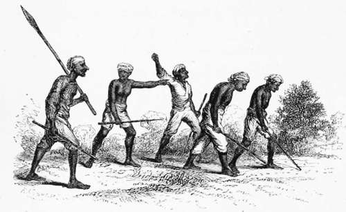

Chapter XI. Part 2
Description
This section is from the book "Hog Hunting In The East, And Other Sports", by J. T. Newall. Also available from Amazon: Hog Hunting in the East, and Other Sports.
Chapter XI. Part 2
* See Appendix, Note A.
The gully was soon reached, but the puggees had just completed ringing it, and found that, though the boar had paid it a visit during his early morning wanderings, he had passed through, and gone on towards the hills. The cover harboured no other pig. It therefore behoved the party to settle down to a bit of good, hard pugging, and there were few men who could better perform that difficult and most important accomplishment in woodcraft than the five shikarees who, under the leadership of old Natta, that day gave proof to what perfection the science could be carried.
Desiring Norman to keep the riders in the rear, and not overrun the line, but let the men work well ahead,
Natta and his little band girded themselves for the task, and, after a refreshing whiff or two at their pipes, struck the trail.
Natta was, of course, director and leader, and at first took little part in the pugging. As long as there could be no doubt or difficulty in carrying it on, his assistance was not requisite. Occasionally glancing to earth, as a sort of acknowledgment of its correctness, he let the others do the active work. Indeed, one, or perhaps a couple of the puggees the individuals changing at times accordingly as the trail turned or inclined to one direction or the other were quite sufficient for the purpose. The pug was plainly discernible in the somewhat soft and easy surface at first traversed, and Natta strode along in the rear of the more advanced, who carried the scent breast high at a long, rapid, walking stride.
Pugging.—a Burning Scent — Natta Satisfied.
Two of the puggees were inhabitants of Dooree. One of these was a half-bred Seedee, a race of African origin, frequently found in Cutch, owing to its niaritime connection with the Arabian and African coasts. Agreeably with the physical characteristics of his race, he was of stouter and larger proportions than his companions, and was perhaps the most trustworthy pug-gee of the four assistants. Another was a tracker from Toorea or Kotye, and the remaining one was Natta's son. All were well-known and experienced men, and, with Natta to guide, hardly to be surpassed as trackers.
The men of Cutch are the best trackers of pig it has been my fortune to come across. I think nowhere else have I seen real woodcraft so exemplified as by their skill in finding an animal by its trail alone. Nor have I seen it made so much use of elsewhere as in that province. This may be, in a measure, owing to the topographical character of the country, which, on account of its isolated position, renders pugging a most useful science in the tracking of robbers from other parts. These, whether on camels or on foot, afford ample scope for its frequent use. Thieving within the province itself is little practised ; it may be, owing to its liability to detection.
In the various native states which are comprised within the area of Rajpootana, a system prevails of rendering answerable each village into whose boundaries may be tracked any thieves. The what I may call— onus repellendi rests with that village; and if the village puggees, receiving the trail from their neighbours, are unable to cany it beyond the confines of their own lands, it is held amenable, as either containing the thieves among its own inhabitants, or harbouring them. In this way not unfrequently large sums of money as compensation are claimed by one state from another; and the international court of vakeels, composed of the native gentlemen accredited from each state to attend on the highest representative of the Indian govern-ment, the agent for the Governor-General, have to investigate and decide on each case under the superintendence of an assistant to the above functionary. So much being dependent on it, the science of pugging is, therefore, in those parts, as in many others— among the Bheels, for instance carried to considerable perfection ; but I have never, for shikaring purposes, found it to equal that of the genuine Cutch puggees.
In favourable ground they readily distinguish the pug of the night from that of the early morning ; and not only from the length of stride, but from form of pressure of any particular portion of the foot, are able to say at what pace the animal has been moving. To discern the difference between the print of the fore and hind feet is an acquirement of the merest tyro. A flock of sheep being driven over or along the trail of a boar is, perhaps, the most serious obstacle but not an unconquerable one to the tracker. The footprint resembles that of a hog, far more so than the goat's, owing partly to the impress of the horny protuberances, or spurs, being left by both of the former animals.
So much is the comparative amount of pressure by certain portions of the foot recognisable that a good puggee is, it is said, in soft ground, able to ascertain if a woman be with child. The wearing of the shoe heel before by thieves, for the purpose of misleading, would be at once detected by an experienced man.
Pugging, then, is an acquirement both of value and interest. Personally I always enjoyed a good exhibition of it, and far preferred the hunting and killing of a boar, thus tracked to his lair, to the more common method of finding him by beating. Each system, however, is applicable only to countries specially adapted to its use. Beating must be resorted to in large jungles, where pugging could not be employed; but it would be almost useless in driving a large tract of more open country, where an isolated bush or clump of bushes might harbour a pig.*
Natta, arrayed in an old check shooting-coat above his ordinary clothing, and carrying a stout, short spear in his hand, strode easily after the other puggees, placidly satisfied that the scent was hot and the pace good, while ever and anon he directed a man to throw a stone into any likely clump they approached.
Continue to:
- prev: Chapter XI
- Table of Contents
- next: Chapter XI. Part 3